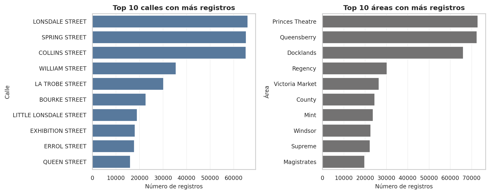

El tratamiento del dato urbano requiere comprender las dinámicas temporales del tráfico y la topología espacial de la ciudad. En esta sección, se presentan los hallazgos principales de la fase exploratoria, así como el mapa cartográfico con los principales puntos de interés.
Rotación diaria
El volumen de eventos de aparcamiento muestra una dependencia total del horario laboral, con un valle de inactividad de madrugada y picos máximos en las horas centrales del día.
Figura 1: Distribución del volumen de eventos de estacionamiento según la hora del día
Hotspots de aparcamiento
La demanda de estacionamiento no se distribuye de manera uniforme, sino que se concentra en vías principales correspondientes a ciertos distritos: comerciales (servicios), financieros…
Código
street_col ='StreetName'area_col ='AreaName'top_10_streets = ( df_500k_mod[street_col] .dropna() .value_counts() .head(10) .sort_values(ascending=False))top_10_areas = ( df_500k_mod[area_col] .dropna() .value_counts() .head(10) .sort_values(ascending=False))fig, axes = plt.subplots(1, 2, figsize=(11, 4.5))sns.barplot( x=top_10_streets.values, y=top_10_streets.index, ax=axes[0], color='#4C78A8')axes[0].set_title('Top 10 calles con más registros', fontsize=11, fontweight='bold')axes[0].set_xlabel('Número de registros', fontsize=9)axes[0].set_ylabel('Calle', fontsize=9)axes[0].tick_params(labelsize=9)axes[0].grid(axis='x', alpha=0.25)sns.barplot( x=top_10_areas.values, y=top_10_areas.index, ax=axes[1], color='#737272')axes[1].set_title('Top 10 áreas con más registros', fontsize=11, fontweight='bold')axes[1].set_xlabel('Número de registros', fontsize=9)axes[1].set_ylabel('Área', fontsize=9)axes[1].tick_params(labelsize=9)axes[1].grid(axis='x', alpha=0.25)plt.tight_layout()plt.show()

Figura 2: Vías y zonas con mayor densidad de registros de aparcamiento
Clasificación espacial
Para dotar al sistema de contexto geoespacial, se ha cruzado el inventario de sensores con la API de OpenStreetMap para clasificar cada plaza según la densidad de puntos de interés cercanos. Se presenta el renderizado interactivo de la red de sensores:
TIP. Puedes interactuar con el mapa, hacer zoom y pasar el cursor sobre los sensores para ver su identificador, vía y clasificación asignada: